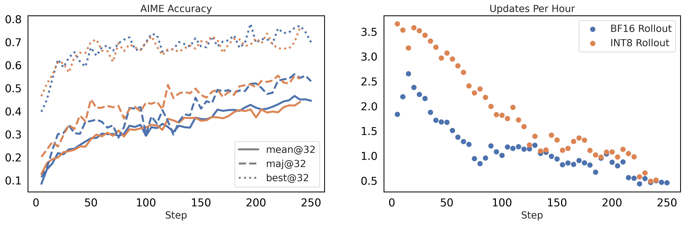

00全景与读法
低比特训练在 2026 年中已经不是一个技术方向,而是三个战场:预训练侧 FP8 成生产标配、NVFP4 收敛中;后训练侧"训练末段 QAT"成万亿 MoE 新默认,即"发布即低比特";RL 侧 FP8 rollout 成框架默认,训推一致裂成 IS 修正与数值对齐两派。datatype 格局可以一句话概括:8-bit 归标准、4-bit 起分歧。本篇的核心问题是最后一个:昇腾自研的 HiF8 用锥形精度 + 38 binade 换"单格式 + 极简缩放"的训练配方,这条路线成立到哪一步。
每一节固定三段:叙事怎么说(左栏,灰)/ 证据是什么(右栏,橙)/ 本站判断(下方色块)。数字按来源分三类标注:第三方 独立测量、论文同行评审或多方一致报道、自报 厂商或作者口径、推断 本站分析。原文中标注为 provisional 或"厂商口径"的数字,在此一律保留该限定语。
一条贯穿全文的线索:低比特的困难正在从"格式设计"转移到"缩放管理"。NVIDIA 系把动态范围问题解决在格式之外(细粒度 tile/block 缩放),HiF8 试图解决在格式之内(锥形精度),而 HiF8 的后续落地报告又补回了 per-tensor delayed scaling——两条路线在工程上正在向"好格式 + 轻缩放"的中间地带靠拢。
01为何此时盘点:三条主线与坐标系
Dispatch 26 给出过一个不利的结论:在训练侧的精度代差里,FP4 一代对国产算力栈最不利——NVIDIA 已经把 NVFP4 做进 Blackwell 的 tensor core 并拿出旗舰级预训练背书,而国产芯片连 FP8 这一代都尚未普遍补齐。但 D26 当时是从硬件矩阵往下看的粗粒度判断,没有回答一个更根本的问题:昇腾在数值层自己的答案是什么? 答案存在:HiF8/HiF4 这条自研格式路线(arXiv:2409.16626、arXiv:2604.08826),只是它长期游离在英文社区的讨论半径之外。
盘点之前先立坐标系。低比特训练的动机可以拆成三条主线,它们经常被混为一谈但收益结构完全不同:省显存(权重、优化器状态、KV cache、激活的存储位宽下降;Kimi K2 只用 FP8 做存储而不做计算,见 HF 讨论区官方确认,就是纯粹这一条);省算力(GEMM 用低位宽 tensor core 跑,FP8 相对 BF16 理论 2×、GB200 上 FP4 GEMM 相对 FP8 又约 2×,见 arXiv:2509.25149;但端到端往往打折——FP8 预训练实测加速只有约 1.2–1.4×,因为 attention、通信、优化器尚未打通);训推一致(RL 训练里 rollout 引擎与训练引擎的数值分歧会直接毒化 on-policy 假设,见 D02 与综述 §8,低比特让分歧更大,也催生了更系统的对齐方法)。

这张图怎么读
关键不在三个 subgraph 各有什么,而在主线到战场的连线是交叉的:主线二(省算力)同时驱动预训练 FP8/NVFP4 与 RL 的 FP8 rollout;主线一(省显存)驱动 BitNet 与 PTQ;主线三(训推一致)只驱动两个节点——末段 QAT 与 INT4/FP4 RL。这解释了为什么"量化级训推一致"会在 GLM-5 的 SFT 阶段和 slime 的 INT4 RL 里同时出现:它们是同一条主线在两个战场上的落点。
再看三条实线箭头:P1 → Q2(预训练低比特化外溢)、Q2 → R2(QAT 权重进入 RL)、R1 → R2(进一步压比特)。这条链条说明战场之间不是并列而是顺序传导——预训练把模型带进 FP8 域,QAT 把它固定在 INT4 域,RL 在已经低比特化的权重上继续训练。虚线 P4 → P1 是精度 scaling law 对比特位选择的约束,是唯一一条从理论指回工程的边。
叙事怎么说
"低比特训练"是一件事:把精度降下去,吞吐提上来,收益随位宽线性兑现。
证据是什么
第三方 三条主线的收益结构不同:省显存不需要低位宽 GEMM 硬件(K2 的 FP8 纯存储用法即证);省算力受制于未低比特化的 attention、通信与优化器,FP8 预训练端到端只有约 1.2–1.4×,离 GEMM 理论 2× 有明显距离;训推一致则与吞吐无关,是正确性问题。
本站判断三条主线必须分开记账,否则会把"理论 2×"当成可兑现收益。对 RL-on-NPU 而言排序是明确的:主线三优先于主线二——一个 rollout 快 40% 但 advantage 有偏的系统,不如一个慢 40% 但位级一致的系统。这也是本篇把第 05–06 节而非第 02 节当作主场的原因。
02低比特预训练:FP8 从论文到生产标配
分水岭是 DeepSeek-V3(arXiv:2412.19437,硬件反思见 2505.09343):首个 671B 参数、14.8T token 的 FP8 预训练。其配方值得逐项拆解,后来者基本都在这个骨架上做变体:只动 GEMM 三类——前向(Fprop)、权重梯度(Wgrad)、激活梯度(Dgrad)三种矩阵乘用 FP8;embedding、输出 head、MoE 门控、归一化、attention 全部保 BF16–FP32,即"FP8 训练"实际是"FP8 GEMM 训练",数值敏感路径均未改动;细粒度缩放——激活按 1×128 tile、权重按 128×128 block 各自缩放,并且每累加 4 次 WGMMA 就升到 FP32 累加器,这是应对 Hopper FP8 累加精度不足的工程补丁;前反向统一 E4M3——放弃经典的"前向 E4M3、反向 E5M2"分工(详见第 07 节),用细粒度缩放吸收动态范围压力;主权重 FP32、优化器一阶/二阶矩 BF16。
这套配方之后被快速跟进:蚂蚁 Ling 2.0 全程 FP8 训练并开源方案(arXiv:2510.22115、FP8 训练方案);MiniMax-M2 以 FP8 权重发布(HF,是否全程 FP8 预训练未见官方说明);NVIDIA 的 MXFP8 配方(arXiv:2506.08027)支撑了 Nemotron Nano 2 的 20T token 预训练(arXiv:2508.14444);学术侧有 InfiR2(2509.22536)、FP8-Flow-MoE(2511.02302)继续补细节。
叙事怎么说
"FP8 预训练已经解决",671B 模型都能训,精度问题不复存在,吞吐翻倍。
证据是什么
第三方 FP8 预训练在 2025 年确实完成了"论文→生产标配"的转变,V3、Ling 2.0、Nemotron Nano 2 三条独立生产线可证。但两个限定语必须保留:一是只有 GEMM 是 FP8,embedding、head、门控、归一化、attention 全部高精度;二是端到端加速约 1.2–1.4×,attention、通信、优化器状态三块尚未低比特化。自报 MiniMax-M2 是否全程 FP8 预训练未见官方说明。
本站判断V3 配方的真正贡献不是"用了 FP8",而是划定了哪些路径不能碰——这份负面清单比正面收益更可迁移。对昇腾侧的含义是:即便 950 的 FP8 算力兑现,可迁移的也只是 GEMM 部分,而 1×128 tile 缩放与 4 次 WGMMA 升 FP32 累加这两项都是对特定硬件缺陷的补丁,换硬件后需要重新确定等价物。
03NVFP4 的 550B 背书与精度 scaling law
NVIDIA 的 NVFP4 预训练论文(arXiv:2509.25149)在 12B 模型、10T token 上验证了四项组合配方:① 随机 Hadamard 变换,仅用于 Wgrad,16×16 块;② 权重 16×16 二维缩放;③ 梯度用随机舍入消偏;④ 约 15% 的敏感层保留 BF16/MXFP8。结果 MMLU-Pro 62.58 对 FP8 基线 62.62,几乎无损。更强的背书是 Nemotron 3 Ultra:550B-A55B、20T token 用 NVFP4 完成预训练并开源(NVIDIA Research,2026-06)。配合 GB200 上 FP4 GEMM 约 2× FP8 的硬件吞吐,FP4 预训练从"能不能"进入"何时普及"阶段。同期还有 MXFP4 训练(2502.20586)、微软 FP4(2501.17116)、Quartet(2505.14669)与 Quartet II(2601.22813)、TetraJet-v2(2510.27527)等平行探索。
另一条路线需要明确定位。BitNet b1.58(2402.17764)靠影子权重 + STE 训 1.58-bit 权重,最大公开模型是 2B4T(2504.12285),后续有 a4.8(2411.04965)、v2(2504.18415)和蒸馏路线(2510.13998)。其定位是:无任何旗舰模型采用,且它省的是推理不省训练(训练时影子权重仍是高精度)。当作期权持有即可。
理论上限来自精度 scaling law。Kumar 等《Scaling Laws for Precision》(2411.04330,ICLR 2025)给出两个关键结论:计算最优精度约 7–8 bit;且过训练(token/参数比越高)越深,训后 PTQ 退化越重。腾讯的浮点量化训练律(2501.02423)给出最优区间 4–8 bit,QAT 也有了自己的 scaling law(2505.14302)。三者共同暗示:8-bit 训练接近"免费",4-bit 是需要配方对冲的边界区,再往下是理论上即不合算的区域。
叙事怎么说
FP4 预训练已经成熟,下一代模型直接 4-bit 训练,成本再降一半;比特位可以继续往下压。
证据是什么
自报 NVFP4 的无损结论建立在 12B/10T 上(MMLU-Pro 62.58 对 62.62),且依赖四项组合配方——Hadamard 变换、二维缩放、随机舍入、约 15% 层保高精度;换言之 4-bit 不是"直接换格式"。第三方 Nemotron 3 Ultra 550B-A55B/20T 是目前唯一的旗舰级开源背书。第三方 精度 scaling law 给出计算最优 7–8 bit(Kumar)与 4–8 bit(腾讯),再往下理论上不合算。
本站判断"4-bit 需要配方对冲"是本节最可迁移的结论:约 15% 层保高精度这一项,本身就说明 4-bit 不是一个纯格式问题。这为第 08–09 节评估 HiF4 提供了对照基准——HiF4 主张"比 MXFP4 需要更少补救",而"补救"正是这四项配方,这个主张是可证伪的,只是目前只有华为口径。
04QAT 对 PTQ:量化时机的选择边界
PTQ 一侧已高度商品化:GPTQ(2210.17323)、AWQ(2306.00978)、SmoothQuant(2211.10438)构成基础设施,W4A16 基本默认无损。旋转类方法将激活量化纳入范围:QuaRot(2404.00456)→ SpinQuant(2405.16406)→ FlatQuant(2410.09426,W4A4 损失 <1 分、prefill 2.3×)→ OSTQuant(2501.13987)/ReSpinQuant(2604.11080)。极低比特有 QuIP#(2402.04396)、AQLM(2401.06118)、SignRoundV2(2512.04746);KV cache 有 KIVI(2402.02750)、KVQuant(2401.18079)、RotateKV(2501.16383)。但边界清晰:W3 陡降,W2 纯 PTQ 不可用(2404.14047)。QAT 能把 W2 的损失压到 3.4 分(ParetoQ,2502.02631)——这是两条路线分界最直观的证据。

这张图怎么读
这是一张决策图而非分类图,读法是从入口沿边走到叶子。五个分支里只有两个(3 比特、2 比特)标注"必须进训练环节",其余三个都汇入 PTQ 的商品化流水线——这意味着 QAT 在 4 比特及以上不是必需品而是可选项,它的普及来自另一个理由(见下方 CONV 节点)。
最值得看的位置是 QAT → CONV 这条边:工业界的收敛点不是"全程 QAT",而是训练末段插入短 QAT——GLM-5 在 SFT 阶段做 INT4 QAT 并配位级一致 kernel、Kimi K2 Thinking 原生 INT4 发布、Gemma 3 仅 5000 步。再往下 CONV → DEF 给出后果:"发布即低比特"成为万亿 MoE 新默认。两条虚线是补充约束:GLM 节点点明 INT4 QAT 的深意是量化层面的训推一致解法;Apple 节点点明最优 QAT 配比随算力预算上升。
QAT 从 LLM-QAT(2305.17888,开山之作且已含 KV 量化)走到 2026 年,收敛出一个统一模式——不是全程 QAT,而是训练末段插入短 QAT:Gemma 3 QAT 仅约 5000 步(Google 官方博客),Unsloth 实测可挽回最高约 70% 的量化损失;Kimi K2 Thinking 原生 INT4 QAT 发布,约 2× 生成加速、近无损;GLM-5(2602.15763)在 SFT 阶段做 INT4 QAT,并配训推位级一致的 kernel——这正是综述 §8 所说训推一致三层(算子级/量化级/路由级)中"量化级"的工业级样本:与其在 RL 阶段修正 mismatch,不如让模型自 SFT 阶段起即采用推理阶段将使用的数值表示;EfficientQAT(2407.11062)2-bit 70B 单 A100 41 小时,将 QAT 成本降至可接受水平;Apple Compute-Optimal QAT(2509.22935)指出 QAT 算力最优配比随总算力上升,配错最多浪费约 50%。
叙事怎么说
PTQ 已经够用,QAT 是重资产路线,只在极端低比特才需要;量化是发版后的独立环节。
证据是什么
第三方 边界确实在 W3/W2:W4A16 默认无损、W4A4 经旋转类接近无损(FlatQuant <1 分),W3 陡降、W2 纯 PTQ 不可用,QAT 可把 W2 压到 3.4 分。但两个趋势正推动选择向 QAT 倾斜:过训练模型 PTQ 更难(2411.17691,与 Kumar 律互证),旗舰模型 token/参数比只会更高;"发布即低比特"正在成为万亿 MoE 新默认(Kimi INT4、GLM INT4、gpt-oss MXFP4,亦见 D21 的 LongCat 多精度发布)。自报 Gemma 3 挽回约 70% 损失为 Unsloth 实测口径;K2 约 2× 生成加速为厂商口径。
本站判断选择边界可以一句话说清:PTQ 赢在"第三方拿 checkpoint + W4A16 + 分钟级出货",QAT 赢在"模型方发版 + sub-4bit + 激活和 KV 也要压"。微调侧的 QLoRA(2305.14314)→ LoftQ(2310.08659)/QA-LoRA(2309.14717)谱系则占据第三方同样追求降本的中间地带。对本看板最关键的一点是 GLM-5 的用法:末段 QAT 在这里不是压缩手段而是训推一致手段——这条线直接通向第 05–06 节。
05低比特 RL:FP8 rollout 成框架默认
D02 记录过 FP8 量化 rollout 三个工作带来 +20–80% 加速、rollout 占 wall-clock 70%+ 的背景。到 2026 年这已是框架默认能力:NeMo-RL 端到端 FP8(NVIDIA 技术博客,Qwen3-30B 约 +48%,github.com/nvidia-nemo/rl);verl 官方 FP8 文档提供"FP8 rollout-only + TIS"和全 FP8 两档;阿里 ROLL、Unsloth 亦有支持。

这张图怎么读
这张图是"IS 修正派"主张的直接图示,读法是左右两图必须合看。左图要看的是两种颜色是否分离:三组曲线(mean/maj/best@32)在 250 步内橙蓝始终交织,没有系统性的高低分层——即 INT8 rollout 配截断重要性采样后,训练轨迹与 BF16 基线在同一带内。若量化未被修正,预期表现是橙线在中后段逐步落到蓝线之下,图中未出现该形态。
右图才是收益所在:纵轴每小时更新数,橙色在训练早期约 3.5–3.7,蓝色约 1.8–2.2,差距接近 2×;随着步数增加两条曲线同时下滑并在约 200 步后收拢到 0.5–1.0 附近。这条下滑趋势值得注意——它说明吞吐优势随生成长度增长而衰减,量化 rollout 的收益不是恒定倍率而是随轨迹长度递减的。这与第 06 节记录的"agentic 场景小 batch 下 FP8 反而可能更慢"是同一现象的两个侧面。图中数字为作者自报,未见独立复现。
叙事怎么说
FP8 rollout 是免费加速:把推理引擎切到 FP8,吞吐提升,训练效果不变。
证据是什么
自报 NeMo-RL 端到端 FP8 在 Qwen3-30B 上约 +48%;FP8-RL(2601.18150)在 veRL 生态做到 rollout +44%。第三方 verl 官方文档把 FP8 分成两档——"rollout-only + TIS"与全 FP8,前者必须配重要性采样修正,这本身就说明"免费"不成立:效果不变是修正后的结果,不是量化本身的性质。图 3 显示吞吐优势随步数衰减。
本站判断框架默认化是真实的,但默认项里带着一个算法补丁(TIS)。"FP8 rollout" 与 "FP8 rollout + IS 修正" 是两个不同的系统,报道加速数字时必须说明是哪一档。对昇腾侧的含义:即使 950 的 FP8 算力兑现,可直接复用的是引擎侧改动,而修正项属于训练框架,需要在 MindSpeed-RL 一侧对应实现。
06两派分化、三大空白与一次看板自我修正
训推一致问题上,方法论清晰地裂成两派。IS 修正派承认 rollout 策略与训练策略数值不一致,用重要性采样修正:FlashRL(github.com/yaof20/Flash-RL,INT8/FP8 + 截断 IS)、AIS(2605.13907,用三个诊断量自适应混合修正策略,1.5–2.76× 加速保精度)。数值对齐派直接消灭分歧:Jet-RL(2601.14243,统一 FP8 精度流,训练侧 +41%、端到端 +16%);QaRL(2604.07853,ACL 2026,训练前向用与 rollout 对齐的低比特 GEMM 算 logprob,配 TBPO 信任带);NeMo-RL;以及 D09 记录过的 Miles(github.com/radixark/miles,首个端到端 FP8 采样 + 训练统一管线,并扩展至 INT4 QAT/W4A16)。两派至今无头对头比较——这本身是一个待填补的空白。

这张图怎么读
先看边的类型:实线是已发表工作,虚线全部标注"推断"。PROB 到两个 subgraph 是实线(问题确实分流成两派),ALP → FRONT 是实线(更低比特前沿从数值对齐派长出来:slime 的 INT4 QAT RL 单 H200 承载 1TB 模型 rollout、QeRL 的 NVFP4+LoRA)。而 ASCEND 子图内部的 HS1 → HS2 → HS3 三条边全是虚线,标注"推断"——这是本图唯一没有文献支撑的路径,原文对此的表述是"此为推断,非已验证结论"。
最值得看的是 ALP 到 HS2 的那条虚线:数值对齐派的思路可迁移到 HiF8,理由是 HiF8 单格式无需 E4M3/E5M2 切换,与"统一精度流"叙事同构。但 HS3 明确写着"现状:零公开工作",并把它标为机会窗口。最后 FRONT 与 HS3 同时指向 GAP 节点——三个领域共同空白(FP8 优化器 × RL、低比特 agentic 训练、跨精度 advantage 偏差系统测量)不是昇腾特有的,而是全域缺失。
更低比特的 RL 前沿有两个样本。slime/LMSYS 的《INT4 QAT RL End-to-End Practice》(lmsys.org 博客)是 sub-8bit RL 的第一个完整落地:训练侧 fake quant、推理侧 W4A16,1TB 级 MoE 的 rollout 纳入单张 H200,稳定性对齐 BF16 全精度 RL。更值得注意的是 QeRL(NVIDIA,2510.11696):NVFP4 + LoRA,rollout 1.5×+,单 H100 训 32B,并发现量化噪声会抬高策略熵、反而有助探索,据此设计了 AQN 自适应噪声调度——量化从"要被修正的误差"变成"可利用的正则"。
系统测量线同样成形:Feng Yao 等(NeurIPS 2025,《On the Rollout-Training Mismatch》)测 logprob 差与 top-1 翻转并提出 TIS;VeXact(2605.14220)构建了零失配诊断环境,证明微小数值分歧可以独立导致训练崩溃;Sea AI Lab 主张用 FP16 解决失配(2510.26788);Beyond Precision(2602.01826)则认为失配本质是优化问题而非数值问题。
叙事怎么说
训推一致是一个已解决的工程细节:加 TIS 或统一精度即可,两种做法等价。
证据是什么
第三方 两派方法论前提相反(承认偏差并修正 对 消除偏差),至今无头对头比较;对失配本质本身也存在分歧——数值问题(Sea AI Lab 主张 FP16)对优化问题(Beyond Precision)。VeXact 证明微小分歧可独立导致训练崩溃。自报 AIS 1.5–2.76× 加速保精度;Jet-RL 训练侧 +41%、端到端 +16%;slime 单 H200 承载 1TB 模型 rollout;QeRL rollout 1.5×+、单 H100 训 32B。
本站判断QeRL 的发现改变了问题的性质:如果量化噪声可以抬熵助探索,那么"最小化 mismatch"就不再是无条件正确的目标。这与数值对齐派的前提直接冲突,而两派之间又缺乏对照实验——这是本节最需要被填补的空白,也是三个可做题目的来源。
D13 的 align-probe 曾使用"logprob MAE 约 0.05 nats 为绿区"的阈值。本次调研确认该阈值在公开文献中无直接依据——通用指标是 token 级 KL、log-ppl gap、top-1 翻转率,且 AIS 表明安全阈值随策略尖锐化动态变化,静态标量阈值在方法上就站不住。D13 应改为动态 KL 类指标。
一、FP8 优化器状态 × RL:无公开工作(预训练侧有 FP8-LM 2310.18313 可迁移)。
二、低比特 agentic 训练(长轨迹、工具调用):未见任何工作——且社区 infra 侧观察指出 agentic 场景的小 batch 下 FP8 反而可能更慢。
三、跨精度 advantage 偏差的方法无关系统测量缺失:没人回答"同一条轨迹在 FP8/FP4 下算出的 advantage 偏多少、偏差怎么随训练演化"。
07datatype 谱系与硬件矩阵:8-bit 归标准,4-bit 起分歧
FP8 的经典设定是前向 E4M3(精度)、反向 E5M2(范围),出自 NVIDIA/Arm/Intel 的 FP8 论文(2209.05433)。这个惯例已被"细粒度缩放 + 全程 E4M3"取代:DeepSeek-V3 如此,NVIDIA 的 MXFP8 配方(2506.08027)更明确发现块缩放之下全程 E4M3 优于分工方案——当缩放粒度细到 32/128 元素,动态范围压力被缩放因子吸收,元素格式就应该把位数全花在尾数上。这个教训对理解 HiF8 的设计哲学很重要。

这张图怎么读
树的分叉点只有一个:FP8 之下同时长出 SHIFT(惯例更替)、MX、NV、HIF8 四支。SHIFT 不是格式而是一条历史事件——"E4M3 与 E5M2 分工被细粒度缩放 + 全程 E4M3 取代",它与另外三支并列的意义在于:后三支的差异本质上都是缩放方案的差异而非元素编码的差异,唯一的例外是 HiF8。
再看三条汇入 SPLIT 的虚线:NVFP4、MXFP4、HiF4 三路并列,构成"4 比特起分歧"的判断。最值得看的是底部 HW 子图与格式的对应关系:Hopper 只有 FP8、Blackwell 覆盖 FP8 与 NVFP4 全系、MI350 走 MX 系、Gaudi3 停在 FP8,而昇腾一行被拆成两段——910B 至 910C 无 FP8,950 自报 FP8+MXFP8+HiF8 一倍算力、MXFP4+HiF4 两倍算力。这一行的断层是本篇后半部分全部讨论的硬件前提。
三条 4-bit 路线的定义差异需要精确记录。OCP MX v1.0(AMD/Arm/Intel/Meta/微软/NVIDIA/高通共同定义,规范):32 元素块 + E8M0(纯 2 的幂)缩放,元素可为 FP8/FP6/FP4/INT8,开放标准,gpt-oss 已以 MXFP4 原生权重发布。NVFP4:16 元素块 + E4M3 实数缩放 + 张量级 FP32 的两级缩放,精度系统性优于朴素 MXFP4——不过软件补救可把差距压到 <1%(2509.23202、2603.08713),私有格式,绑 Blackwell。HiF 系:华为闭环,HiF8(2409.16626)+ HiF4(2604.08826)。另有两个边缘格式:FP6 处在"精度不如 FP8、吞吐不如 FP4"的过渡区间(2401.14112);posit(标准 v2)无商业采用,其锥形精度思想事实上被 MX/HiF 吸收。学界已有中立参照系:84 种格式的系统目录(2606.09686)。
| 硬件 | FP8 | MX 系 | 4-bit | 备注 |
|---|---|---|---|---|
| NVIDIA Hopper | 原生 | 无 | 无 | |
| NVIDIA Blackwell | 原生 | MXFP8/6/4 | NVFP4 | |
| AMD MI350 | 原生 | MX 三格式原生 | MXFP4 | |
| Intel Gaudi3 | 支持 | — | — | |
| 昇腾 910B/910C | 无 | 无 | 无 | CloudMatrix384 论文明确 |
| 昇腾 950 | FP8+MXFP8+HiF8 各 1 PFLOPS(自报) | MXFP8/MXFP4 | MXFP4+HiF4 各 2 PFLOPS(自报) | 华为 HC2025,全部厂商口径无第三方,provisional |
| 寒武纪 | 信息最不透明 | — | — | 未见可靠公开信息 |
还有一个地缘信号需要记录:DeepSeek V3.1 采用 UE8M0 缩放因子(即 MX 的 E8M0 缩放,官方称"针对即将发布的下一代国产芯片设计",见 HF 模型卡、CNBC),被普遍解读为向 MX 标准靠拢、同时为国产芯片预留兼容路径——纯 2 的幂缩放对没有实数缩放硬件路径的芯片最友好。
叙事怎么说
数值格式已经标准化,选 FP8 还是 FP4 只是位宽选择;国产芯片补齐 FP8 即可跟上。
证据是什么
第三方 8 比特层面确实收敛(E4M3 + 块缩放),但 4 比特是三路分歧:NVFP4 私有绑 Blackwell、MXFP4 开放标准、HiF4 华为闭环;三者块大小与缩放类型均不同(16 元素 E4M3 实数缩放 对 32 元素 E8M0 二次幂缩放)。自报 昇腾 950 的全部算力数字为厂商口径、provisional;第三方 910B/910C 无 FP8 由 CloudMatrix384 论文明确。
本站判断格局一句话:8-bit 归标准(E4M3 + 块缩放),4-bit 起分歧(NVFP4 私有 / MXFP4 开放 / HiF4 华为闭环)。UE8M0 的选择说明了国产路径的现实约束——纯 2 的幂缩放不需要实数缩放的硬件通路,这是兼容性优先的工程决策,也间接说明实数缩放在国产芯片上仍是成本项。
08HiF8 详析(上):锥形精度的编码机理
HiFloat8 的正式出处是华为《Ascend HiFloat8 Format for Deep Learning》。它不是"另一个 ExMy",而是变长编码:1 bit 符号 + 2–4 bit 的"dot 域"变长前缀码 + 无偏置符号-幅值表示的指数 + 尾数。dot 域编码 5 个 D 值外加 denormal 标志,其作用是动态划分剩余位在指数与尾数之间的分配,由此得到锥形精度(tapered precision):量级最接近 1 的 7 个指数值配 3 bit 尾数;次一档的 8 个指数值配 2 bit 尾数;更远的 16 个指数值配 1 bit 尾数;denormal 机制再向外扩 7 个二进制幂。总动态范围达 38 个 binade——对比 FP16 的 40 和 E4M3 的约 18。
设计直觉是:训练张量(尤其归一化后的激活和梯度)量级集中在 1 附近呈重尾分布,将尾数位集中于分布中心、用长尾指数覆盖离群值,单一格式就能同时满足 E4M3 的精度需求和 E5M2 的范围需求。这与 posit 的锥形思想同源,与"E4M3/E5M2 分工"是两条对立的解法:NVIDIA 系用细粒度缩放在格式外解决范围问题(第 07 节),HiF8 把范围问题解决在格式内部。

这张图怎么读
左右两个子图之间只有一条实线:HC3 → GEMM,标注"单格式支撑前反向统一"。这条边是整张图的论证核心——编码侧的 38 binade 是配方侧"只动 GEMM 三类输入、不做双格式切换"的前提。若没有 38 binade,右侧配方就退化成需要前向 E4M3、反向 E5M2 的经典分工。
右侧 FLOW 子图内部有一处值得注意的结构:SC1 → SC2 是一条独立的时间线,而不是数据流。SC1 是原论文主张(不用 per-tensor scaling,只用全局或自适应 loss scaling),SC2 是后续报告的补充(per-tensor delayed scaling、Amax 每 5 步更新)——图中这条边记录的是主张被工程实践修正的过程。最后 EXP 节点用虚线挂在 GEMM 上,并把证据与其上限写在同一个框里:T5、LLaMA-7B、GPT-3 6.7B 与 13B 的 loss 曲线与 FP16 重合、OLMo-1B 240B token 偏差小于 0.5%,同时明确"未见大于 13B 或 MoE 公开数字,均为华为自证"。
叙事怎么说
HiF8 是"又一个 8 比特浮点格式",与 E4M3、MXFP8 属于同类替代品,差别只在精度略好或略差。
证据是什么
自报 HiF8 是变长编码而非固定 ExMy:dot 域 2–4 bit 前缀码动态分配指数与尾数位,得到 7 个指数值配 3 bit 尾数 / 8 个配 2 bit / 16 个配 1 bit 的锥形分布,总动态范围 38 binade(FP16 为 40、E4M3 约 18)。第三方 同一问题的另一解法是块缩放:MXFP8 配方发现块缩放之下全程 E4M3 优于 E4M3/E5M2 分工——即用格式外的缩放吸收范围压力。
本站判断两条路线的分歧点可以精确表述:范围问题在格式内解决还是在格式外解决。NVIDIA 系选择格式外(缩放粒度细到 32/128 元素),HiF8 选择格式内(锥形精度)。二者不是精度高低之争,而是复杂度转移之争——前者把复杂度放在缩放管理软件里,后者放在编解码硬件里。第 09 节将说明这个转移并不彻底。
09HiF8 详析(下):训练配方、补丁与证据链上限
原论文配方逐项如下:① FP16 混合精度框架下,仅 GEMM 三类输入(激活、权重、激活梯度)换 HiF8,最后一层 FC 除外;非线性与归一化保 FP16——骨架与 DeepSeek-V3 同构,只动 GEMM;② 默认不用 per-tensor scaling,只保留全局/自适应反向 loss scaling(BLS/ALS),理由是 38 binade 的动态范围已接近 FP16,不需要精细缩放;不过论文自己也承认少数场景需补 per-tensor scaling 以改善精度并降低调参难度;③ 舍入:前向 round-half-away(TA),反向 TA 或 TA + 随机舍入混合;④ FP32 主权重、高精度累加。
第 ② 项是 HiF8 最激进的差异化主张:NVIDIA 系 FP8 的工程复杂度大半在缩放管理(tile/block 缩放、Amax 历史、缩放因子同步),HiF8 声称格式本身消除了这一层。但要如实记录:后续官方报告(2025–2026,经 CSDN/共熵中心转载)在实际落地中补回了 per-tensor delayed scaling(Amax 每 5 步更新 + 异常自动检测),在 OLMo-1B/240B token 上相对 BF16 loss 偏差 <0.5%、下游掉点 <1%、6 万步仅 1 次异常。这些均为厂商自报(provisional)。
实验证据链及其上限同样清楚。论文报告:T5、LLaMA-7B、GPT-3 6.7B–13B 的 loss 曲线与 FP16 在 run-to-run 波动内重合;ResNet/ViT 等传统模型同;PTQ 推理 top-1 掉点 ≤0.5%。上限是:未见 >13B 或任何 MoE 规模的公开数字;所有系统评测均为华为自证——包括推理侧对比(2602.12635,作者全部来自华为:HiF8 在高方差激活/KV 上占优,W8A8+KV8 比静态 log-FP8 高 0.3–0.5%,但加 scaling 后与 MXFP8 相当);无独立第三方复现。姊妹篇 HiF4 预训练(2604.08826)主张 HiF4 比 MXFP4 需要的补救(Hadamard/随机舍入等)更少——逻辑自洽(锥形格式在 4-bit 下范围优势更放大),但同样只有华为口径。
落地时间线:910B/910C 不支持任何 FP8,HiF8 无可运行硬件;950 首次原生支持 HiF8,950PR 已于 2026 年一季度随 Atlas 350 上市(TrendForce),偏 prefill;950DT(训练 + decode 向)提前至 2026-08 云上部署(TrendForce);软件侧 CANN 宣布将开源 HiF8 转换算子与训推 recipe(2026-03 官方直播),AMCT 已支持 HiF8 PTQ;第三方生态几乎为零,GitHub 上只有个人项目 Windere/HiFP8(CUDA 伪量化 + vLLM 插件)。
叙事怎么说
HiF8 用更好的格式换掉了缩放管理这一整层工程复杂度,是"纯格式、零缩放"的训练方案。
证据是什么
自报 原论文默认不用 per-tensor scaling,但论文自己承认少数场景需补;后续官方报告在实际落地中补回了 per-tensor delayed scaling(Amax 每 5 步更新 + 异常自动检测),OLMo-1B/240B token 上 loss 偏差 <0.5%、下游掉点 <1%、6 万步 1 次异常。自报 证据链止于 13B(T5、LLaMA-7B、GPT-3 6.7B–13B),无 MoE 规模数字,无独立第三方复现;推理侧对比论文作者全部来自华为,且其结论是"加 scaling 后与 MXFP8 相当"。
本站判断"纯格式、零缩放"的极简主张在更大规模上并不充分,HiF8 最终也回到了"好格式 + 轻缩放"的中间路线——只是其缩放粒度确实比 NVIDIA 系更粗(per-tensor 对 per-tile/block)。这不否定格式设计的价值,但把差异化从"消除一层"降级为"简化一层"。另一处需要注意的是华为自证的推理侧结论:加 scaling 后与 MXFP8 相当——即在有缩放的条件下,锥形精度的优势被抵消。
10综合判断:昇腾数值层的攻防与三个题目
D26 的结论"FP4 代差对国产栈最不利"需要细化为三层(以下为分析推断):格式层:有了。 HiF8/HiF4 在设计上是认真的答案,锥形精度 + 38 binade 对"少缩放"的主张有真实数值依据,HiF4"需要更少补救"的论点方向上可信。硬件层:自报有了。 950 自报 HiF8/FP8/MXFP8 各 1 PFLOPS、HiF4/MXFP4 各 2 PFLOPS(provisional),纸面上与 Blackwell 的格式覆盖对齐。尚缺三项:第三方验证、软件生态、外部采用。 无独立复现、无 >13B/MoE 公开数字、CANN recipe 尚在"宣布将开源"阶段(第 11 节有更新)、最重要的潜在客户 DeepSeek 选了 MX。
最显著的负向信号是:DeepSeek V4 部署在 950PR 上,却选择 UE8M0/MX 式 FP8 而非 HiF8(TrendForce)。最有能力给 HiF8 做第三方背书的头部用户,在同一块芯片上以实际选择支持了 MX 标准。可能的解释包括跨平台可移植性、已有 FP8 工具链沉淀、以及对私有格式锁定的顾虑——具体原因未见公开信息,但无论哪种,对 HiF8 的生态前景均为不利信号。
叙事怎么说
昇腾有自研数值格式,因此在低比特这一代不落后;950 的格式覆盖已与 Blackwell 对齐。
证据是什么
推断 分三层看:格式层有真实设计、硬件层为自报覆盖、生态层缺第三方验证与外部采用。第三方 对冲 NVFP4 代差的瓶颈已不在格式设计而在生态飞轮——NVFP4 有 Nemotron 3 Ultra 550B/20T 的开源背书,HiF 系还没有等价物;DeepSeek V4 在 950PR 上选 MX 而非 HiF8 是可观察的外部选择。推断 950 同时铺 MX 和 HiF 双轨,本身也可读作对 HiF 独立成势没有十足把握的保险动作。
本站判断另一面是机会:调研确认 HiF8 与 RL 的交叉零公开讨论,而叙事契合度其实很高——第 06 节的"数值对齐派"追求训推同一精度流,HiF8"单格式统一前反向、几乎不需缩放管理"恰好是这个叙事的极端形态:缩放因子是训推数值分歧的重要来源(不同引擎的 Amax 历史、粒度、更新时机不一致),缩放越少,位级一致越容易实现(此为推断)。零先例既是风险也是可发表窗口,尤其在 950DT 2026-08 云上可用之后。
一、950DT 上 HiF8 GRPO 复现 + 对齐测量。小模型 GRPO,rollout 与训练全 HiF8,用 token 级 KL/top-1 翻转率(而非静态 nats 阈值)对照 BF16 与 FP8 基线——同时产出 HiF8 的第一份第三方训练数字,兼具两项产出。
二、HiF8 QAT rollout。把 GLM/slime 的 INT4 QAT RL 模式移植到 HiF8——SFT 末段 HiF8 fake quant,rollout 原生 HiF8,检验"发布即 HiF8"能否在昇腾闭环内完成。
三、跨精度 advantage 偏差基准。方法无关地测量同一批轨迹在 BF16/FP8/HiF8/NVFP4 下的 advantage 估计偏差及其随策略尖锐化的漂移——直接填第 06 节第三个空白,且天然覆盖 HiF 格式。
D13(必须修正):align-probe 的"0.05 nats 绿区"阈值无文献依据,改为 token 级 KL/log-ppl gap/top-1 翻转率,且阈值应随策略熵动态调整(依据 AIS 2605.13907)。
D26(细化):"FP4 代差最不利"维持,但补充:昇腾在格式与自报硬件层已有答案(HiF4/MXFP4 各 2 PFLOPS,provisional),缺口收窄为第三方验证 + 软件生态 + 外部采用三项;DeepSeek V4 弃 HiF8 选 MX 是负向证据。
D03(维持并加注):950 FP8 仍全为厂商口径,950PR 已上市但独立测试未见公开信息。
D02/D09(维持):FP8 rollout 框架默认化与 Miles 统一管线的判断被本次调研进一步证实,新增 Jet-RL/QaRL/AIS 为两派谱系代表。
新增待办:两派(IS 修正 对 数值对齐)头对头比较、FP8 优化器 × RL、低比特 agentic 训练,均为公开空白。
11跟进(2026-08-27):HiF8 算子开源兑现
原文"下一步看什么"的两项已有结果。CANN HiF8 算子开源:已兑现。 HiF8 量化算法与 HiFloat8 Cast 算子源码开源于 CANN 社区 AMCT 仓(gitcode.com/cann/amct,路径 amct_ops/hifloat8_cast,提供 encode/decode,A2 平台实测约 4GB/s 吞吐,兼容 A2/A3/昇腾 950;见工程化文章)。第 09 节"CANN recipe 尚在宣布将开源阶段"的表述据此更新;CANN 全量算子承诺 9 月底前上 GitCode,仍待验。
950DT"8 月上华为云":截至 08-27 无公开兑现证据。 全网仍只有 6 月厂商预告,无上线公告、首批用户或训练数字;间接旁证是 vLLM-Ascend v0.23.0(08-16)已合入 Ascend 950 上 DeepSeek V4 端到端支持(DSA attention/MTP/MXFP 量化)——950 系硬件在头部客户处真实运转,但华为选择不公开宣发,与 6 月高调预告形成反差。HiF8 训练的第一份公开实践仍未出现。
叙事怎么说
算子开源与硬件上线是同一件事的两步,前者兑现意味着后者也已就位。
证据是什么
自报 算子侧兑现可核验:AMCT 仓路径明确、提供 encode/decode、A2 平台实测约 4GB/s、兼容 A2/A3/950。第三方 950DT 云上部署截至 08-27 无任何公开兑现证据,仅有 6 月预告;唯一旁证是 vLLM-Ascend v0.23.0(08-16)合入 950 上 DeepSeek V4 端到端支持——注意这条旁证同时说明 950 在跑的是 MXFP 量化而非 HiF8。
本站判断两项跟进的结果方向相反:格式工具链在推进,训练侧证据仍为零。更值得注意的是旁证的内容——950 上真实运转的是 DeepSeek V4 的 MXFP 量化路径,这与第 10 节记录的"头部客户选 MX"是同一事实在两个时间点的确认,而非两条独立证据。
12叙事 vs 证据:一页总表
| 主题 | 叙事怎么说 | 证据是什么 · 本站判断 |
|---|---|---|
| 三条主线 | 低比特是一件事,收益随位宽兑现 | 省显存不需低位宽 GEMM 硬件;省算力端到端仅 1.2–1.4×;训推一致与吞吐无关。三条主线必须分开记账,RL 侧主线三优先 |
| FP8 预训练 | FP8 已解决,671B 可训 | V3 671B/14.8T 为分水岭,但只有 GEMM 三类是 FP8,embedding/head/门控/归一化/attention 全高精度。V3 配方的贡献是负面清单 |
| NVFP4 | FP4 已成熟,直接换格式 | 12B/10T 上 MMLU-Pro 62.58 对 62.62,但依赖 Hadamard + 二维缩放 + 随机舍入 + 约 15% 层保高精度四项配方;550B-A55B/20T 为唯一旗舰背书。4-bit 不是纯格式问题 |
| BitNet | 1.58-bit 是下一代路线 | 最大公开模型 2B4T,无旗舰采用,省推理不省训练。研究期权 |
| 精度上限 | 比特位可继续往下压 | Kumar 计算最优 7–8 bit、腾讯 4–8 bit;过训练越深 PTQ 退化越重。8-bit 接近免费,4-bit 需配方对冲 |
| PTQ 对 QAT | PTQ 够用,QAT 是重资产 | W4A16 默认无损、W4A4 旋转后接近无损,W3 陡降、W2 纯 PTQ 不可用(QAT 压到 3.4 分)。边界在 W3;两个趋势推动向 QAT 倾斜 |
| 末段 QAT | 量化是发版后的独立环节 | Gemma 3 约 5000 步、K2 Thinking 原生 INT4、GLM-5 SFT 阶段 INT4 QAT 配位级一致 kernel。"发布即低比特"成万亿 MoE 新默认,且 GLM 用法是训推一致手段 |
| FP8 rollout | 免费加速,效果不变 | NeMo-RL Qwen3-30B 约 +48%、FP8-RL rollout +44%,但 verl 的 rollout-only 档必须配 TIS;图 3 显示吞吐优势随步数衰减。"FP8 rollout"与"FP8 rollout + IS 修正"是两个系统 |
| 训推一致 | 已解决的工程细节,两派等价 | 两派前提相反且无头对头比较;失配本质本身有分歧(数值 对 优化);VeXact 证明微小分歧可独立致训练崩溃。QeRL 的噪声助探索使"最小化 mismatch"不再无条件正确 |
| datatype | 格式已标准化,补齐 FP8 即可 | 8-bit 收敛(E4M3 + 块缩放),4-bit 三路分歧(NVFP4 私有 16 元素实数缩放 / MXFP4 开放 32 元素二次幂 / HiF4 闭环)。UE8M0 说明国产路径受实数缩放硬件通路约束 |
| HiF8 编码 | 又一个 8 比特浮点格式 | 变长编码 + 锥形精度:7 个指数值 3 bit 尾数 / 8 个 2 bit / 16 个 1 bit,38 binade(FP16 为 40、E4M3 约 18)。分歧点是范围问题在格式内还是格式外解决 |
| HiF8 配方 | 纯格式、零缩放 | 原论文默认不用 per-tensor scaling 且自承少数场景需补;后续报告补回 per-tensor delayed scaling(Amax 每 5 步)。极简主张在更大规模不充分,回到"好格式 + 轻缩放" |
| HiF8 证据 | 已验证可用于大模型训练 | 证据止于 13B(T5/LLaMA-7B/GPT-3 6.7B–13B),OLMo-1B/240B token 偏差 <0.5%,无 MoE 数字、无第三方复现,推理侧对比作者全部来自华为且结论为"加 scaling 后与 MXFP8 相当" |
| 昇腾数值层 | 有自研格式因此不落后 | 格式层有、硬件层自报有、生态层缺三项;DeepSeek V4 在 950PR 上选 MX 而非 HiF8。瓶颈在生态飞轮而非格式设计 |
| HiF8 × RL | —(无叙事,零公开讨论) | 零先例;与数值对齐派叙事同构(缩放越少越易位级一致,推断)。风险与可发表窗口并存 |
| 跟进兑现 | 算子开源意味着全链路就位 | 算子已开源(AMCT 仓,约 4GB/s);950DT 云上部署截至 08-27 无兑现证据;旁证显示 950 上跑的是 DeepSeek V4 的 MXFP 路径。两项方向相反 |
13原文没给的东西、未能核实的东西
以下条目在原文中或为空白、或为单一来源口径,复现与引用时必须自行确定或保留限定语:
- HiF8 的完整位级编码表未在本文复述:dot 域 5 个 D 值与 denormal 标志的具体码字分配需回查 2409.16626;本文只保留了尾数位分档(3/2/1 bit)与 38 binade 的结论。
- HiF8 大规模训练数字全部为华为自证:OLMo-1B/240B token 的 loss 偏差 <0.5%、下游掉点 <1%、6 万步 1 次异常,来源为官方报告经 CSDN/共熵中心转载,provisional,无独立复现。
- 无 >13B 与 MoE 规模的 HiF8 公开数字:证据链止于 GPT-3 13B,而当前旗舰均为万亿级 MoE,外推缺口未被任何公开实验覆盖。
- 昇腾 950 全部算力数字为厂商口径:FP8/MXFP8/HiF8 各 1 PFLOPS、MXFP4/HiF4 各 2 PFLOPS 出自华为 HC2025 演讲,provisional,无第三方测量。
- DeepSeek V4 在 950PR 上弃 HiF8 选 MX 的原因未见公开信息:可移植性、工具链沉淀、私有格式锁定顾虑三种解释均为推测。
- 两派(IS 修正 对 数值对齐)无头对头比较:各自的加速数字(AIS 1.5–2.76×、Jet-RL +41%/+16%、NeMo-RL +48%、FP8-RL +44%)口径不同,任务、模型与预算均不一致,不可横向相减。
- 三大空白无任何公开工作:FP8 优化器状态 × RL、低比特 agentic 训练、跨精度 advantage 偏差的方法无关系统测量。其中 agentic 场景"小 batch 下 FP8 反而可能更慢"仅为社区 infra 侧观察,非测量结论。
- 寒武纪的格式支持信息最不透明:未见可靠公开信息,硬件矩阵中该行为空。
- 950DT 的实际上线状态未确认:截至 2026-08-27 仅有 6 月厂商预告,无上线公告、首批用户或训练数字。
- 本页原图受限于网络代理可达性,仅取自 GitHub 托管的官方仓库 README;arXiv 论文配图、华为官方演讲图、NVIDIA 技术博客图均不可达,其余图示为本站依原文 mermaid 源渲染。
一、低比特的困难已从格式设计转移到缩放管理。NVIDIA 系把范围问题解决在格式外(1×128 tile、128×128 block、Amax 历史与同步),HiF8 试图解决在格式内(38 binade 锥形精度),但落地报告补回了 per-tensor delayed scaling。评估任何新格式时,应先问"它省掉了多少缩放状态",而不是"它的尾数有几位"。
二、"FP8 rollout 加速 N%"这句话必须带档位。rollout-only + TIS 与全 FP8 是两个系统,前者的效果不变来自算法修正而非数值性质;而 QeRL 的量化噪声抬熵发现进一步说明,量化误差在 RL 中未必是需要被消除的量。报告与复现时应同时给出加速档位与对齐指标(token 级 KL、top-1 翻转率)。
三、昇腾数值层的缺口不在格式而在生态飞轮。格式层已有认真设计、硬件层有自报覆盖,缺的是第三方验证、软件生态与外部采用三项;而最有能力提供第一项与第三项的头部客户已在同一块芯片上选择了 MX。HiF8 × RL 的零先例因此同时是最大风险与最清晰的可发表窗口。
950DT 2026-08 云上部署——HiF8 训练首次具备可运行硬件,关注首批公开训练数字与 CANN HiF8 recipe 的实际开源(算子部分已于 08-27 兑现,全量算子承诺 9 月底前上 GitCode) · CANN HiF8 算子开源兑现的时间差是判断华为对 HiF8 生态决心的关键验证点 · 两派头对头:IS 修正(AIS)对数值对齐(QaRL/Jet-RL)在同一任务同一预算下的系统比较,谁先做谁定义评测标准 · 低比特 agentic 训练第一篇:长轨迹 + 工具调用 + 量化的交叉零先例,QeRL 的"噪声助探索"在 agent 场景是否成立值得第一个去测。